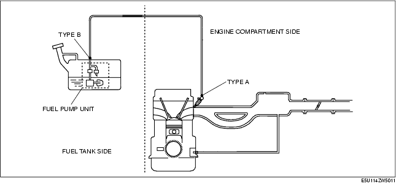
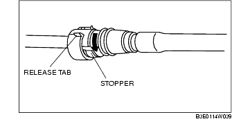
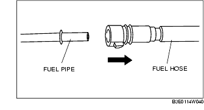
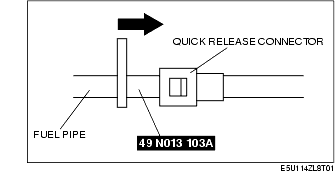
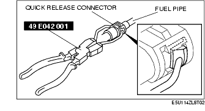
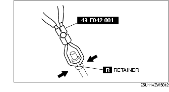
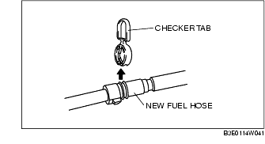
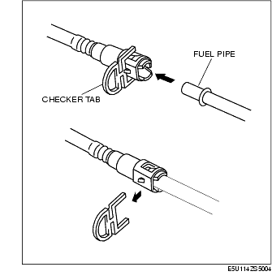

Workshop Manual ➭ ENGINE ➭ FUEL SYSTEM[L8, LF] ➭ QUICK RELEASE CONNECTOR (FUEL SYSTEM) REMOVAL/INSTALLATION [L8, LF]
QUICK RELEASE CONNECTOR (FUEL SYSTEM) REMOVAL/INSTALLATION [L8, LF]
id0114a3810000
• Fuel is very flammable liquid. If fuel spills or leaks from the pressurized fuel system, it will cause serious injury or death and facility breakage. Fuel can also irritate skin and eyes. To prevent this, always complete the "Fuel Line Safety Procedure", while referring to the "BEFORE SERVICE PRECAUTION".
Quick Release Connector Type
• There are two types of quick release connectors. Verify the type and location, and install/remove properly.

Type A Removal
- Follow "BEFORE SERVICE PRECAUTION" before performing any work operations to prevent fuel from spilling from the fuel system. (See BEFORE SERVICE PRECAUTION [L8, LF].)
• The quick release connector may be damaged if the release tab is bent excessively. Do not expand the release tab over the stopper.
• The fuel hose can be removed by pushing it to the pipe side to release the lock.


- Cover the disconnected quick release connector and fuel pipe with vinyl sheeting or a similar material to prevent it from becoming scratched or dirty.

Type B Removal
• Be careful not to damage the pipe when unlocking the retainer.
• When removing the quick connector, either SST 49 E042 001 or 49 N013 103A (Part of 49 N013 1A0D) can be used.
When using SST 49 N013 103A (Part of 49 N013 1A0D)
-
Follow "BEFORE SERVICE PRECAUTION" and remove dirt from the connecting surfaces before performing any work operations. (See BEFORE SERVICE PRECAUTION [L8, LF].)

-
Pull out the fuel hose straight from the fuel pipe and disconnect it.
-
Cover the disconnected quick release connector and fuel pipe with vinyl sheeting or a similar material to prevent it from scratches or dirt.
When using SST 49 E042 001
• If the quick release connector is removed, replace the retainer with a new one.
-
Follow "BEFORE SERVICE PRECAUTION" and remove dirt from the connecting surfaces before performing any work operations. (See BEFORE SERVICE PRECAUTION [L8, LF].)

• The quick release connector can be removed by pushing the center of the retainer tabs. • The retainer is attached to the pipe even after the connector is disconnected.
-
Hold the center of the retainer tabs with the SST ends and press the retainer.
-
Pull the connector side and disconnect the quick release connector.

- Cover the disconnected quick release connector and fuel pipe with vinyl sheeting or a similar material to prevent it from scratches or dirt.
Type A Installation
• If the quick release connector O-ring is damaged or has slipped, replace the fuel hose.
• A checker tab is integrated with the quick release connector for new fuel hoses and evaporative hoses. Remove the checker tab from the quick release connector after the connector is completely engaged with the fuel pipe.

• If there is any malfunction, replace it with a new one.
-
Apply a small amount of clean engine oil to the sealing surface of the fuel pipe.
-
Reconnect the fuel hose straight to the fuel pipe until a click is heard.
• If the quick release connector does not move at all, disconnect it, verify that the O-ring is not damaged or has not slipped, and then reconnect the quick release connector.
-
Lightly pull and push the quick release connector a few times by hand, and then verify that it can move 2.0-3.0 mm {0.08-0.12 in} and is connected securely.
-
Complete the "AFTER SERVICE PRECAUTION". (See AFTER SERVICE PRECAUTION [L8, LF].)
Type B Installation
• Always replace the retainer with a new one when using SST 49 E042 001, otherwise, fuel leakage could result.
• If the quick release connector O-ring is damaged or has slipped, replace the piping component.
• A checker tab is integrated with the quick release connector for new fuel hoses and evaporative hoses. Remove the checker tab from the quick release connector after the connector is completely engaged with the fuel pipe.

• If there is any malfunction, replace it with a new one.
-
Apply a small amount of clean engine oil to the sealing surface of the fuel pipe.
-
Reconnect the hose straight to the pipe until a click is heard.
-
Lightly pull and push the quick release connector a few times by hand, and then verify that it is connected securely.
-
Complete the "AFTER SERVICE PRECAUTION". (See AFTER SERVICE PRECAUTION [L8, LF].)